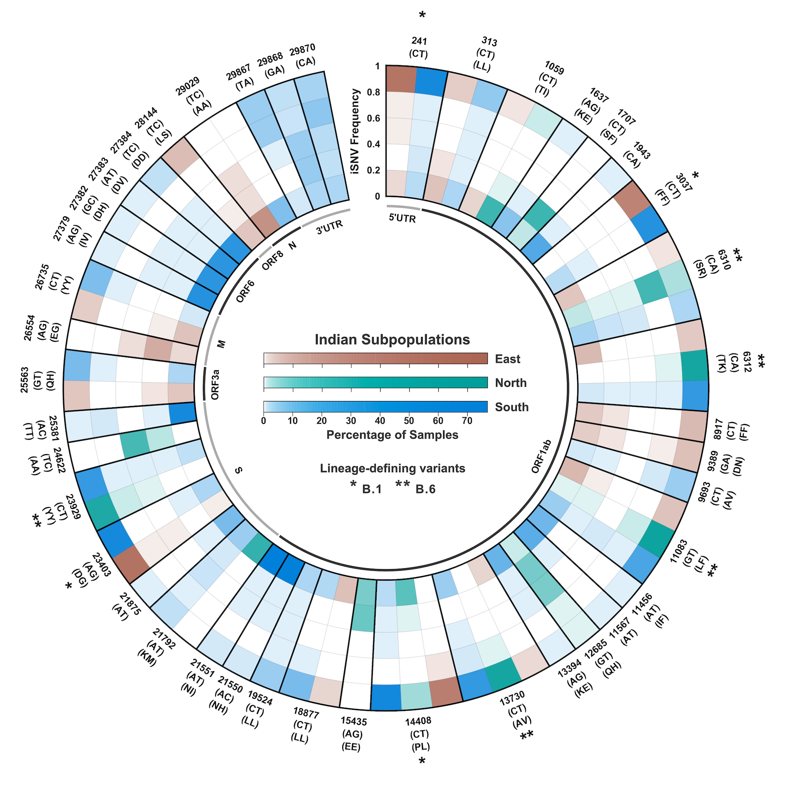

visualstories
Prominent SARS-CoV-2 strains in India.

Distribution of intra-host Single Nucleotide Variations (iSNVs) in SARS-CoV-2 across various regions.
Accumulation of mutations in the Spike domain of SARS-CoV-2 and their prominence.
Network of co-occurance of mutations in the Spike domain of SARS-CoV-2.

Host induced intra-, inter- and population-level diversity in virus circulation.
Prevalance of iSNVs across protein-coding domains of SARS-CoV-2.
Enriched phenotypes in differential variants between extreme phenotypic healthy individuals.